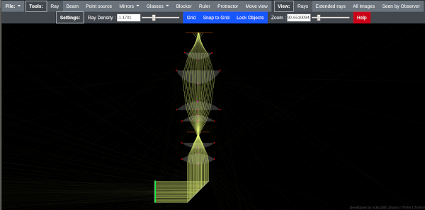

Ray optics is opensource javascript-based optical simulation application, it was originally created by ricktu288
Original version of ray-optics can be tested here: Orginal ray-optics application
Original sources can be found here:
ricktu288 ray-optics
I decided to forks this application and make some changes mainly in UI/UX as this application originally is really educative, but usage and appearance of this is my opinion is a bit discouraging
Modified application can be tested here:
Modified ray-optics
Modified sources:
my ray-optics repo